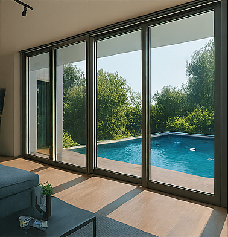

A AlumArtes oferece soluções completas em esquadrias de alumínio e vidraças, com qualidade e personalização para atender residências, comércios e projetos especiais:
- Instalação de Esquadrias de Alumínio
Portas, janelas e painéis com acabamento moderno e durabilidade. - Montagem de Vidraças
Vidros temperados, laminados e comuns para diversos ambientes. - Fechamento de Sacadas
Sistemas deslizantes ou articulados que garantem conforto e segurança. - Box para Banheiro
Modelos sob medida com vidro temperado e ferragens de alta qualidade. - Fachadas de Vidro
Soluções arquitetônicas para prédios comerciais e residenciais. - Manutenção de Janelas e Portas
Troca de roldanas, vedação, ajustes e reparos em geral. - Corrimãos e Guarda-Corpos
Em vidro ou alumínio, com design seguro e elegante. - Projetos Personalizados
Atendimento técnico para desenvolver soluções sob medida conforme sua necessidade.
